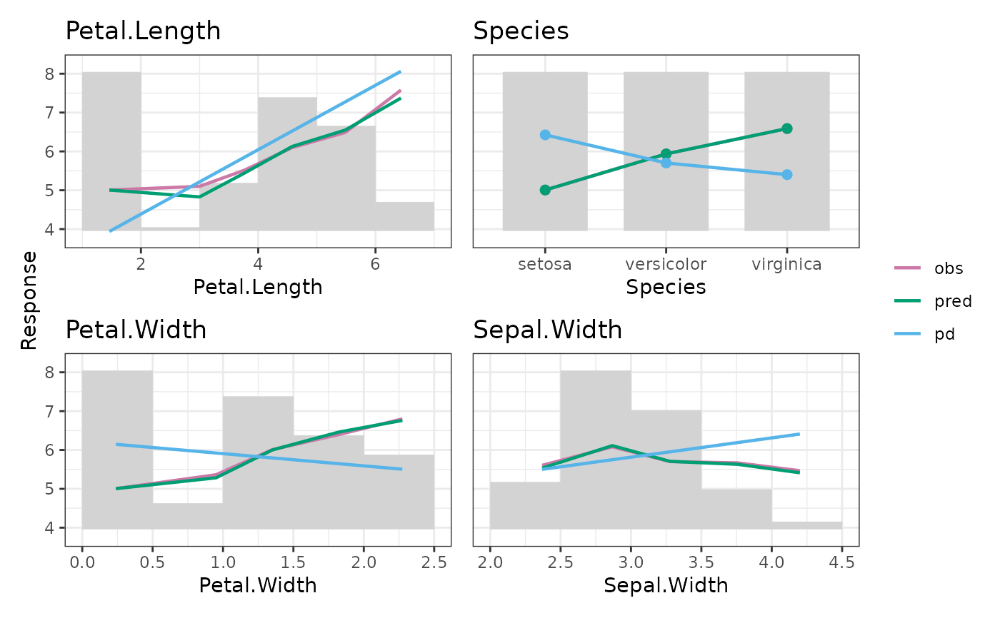

This is the main function of the package. It calculates
average observed,
average predicted,
partial dependence, and
counts/weights
over a (possibly binned) feature v, optionally weighted with weights w.
marginal(object, ...)
# Default S3 method
marginal(
object,
x_name,
data,
y = NULL,
pred = NULL,
pred_fun = stats::predict,
w = NULL,
breaks = "Sturges",
right = TRUE,
discrete_m = 2L,
winsorize_low = 0.01,
winsorize_high = 0.99,
calc_pred = TRUE,
pd_n = 500L,
...
)
# S3 method for class 'ranger'
marginal(
object,
x_name,
data,
y = NULL,
pred = NULL,
pred_fun = NULL,
w = NULL,
breaks = "Sturges",
right = TRUE,
discrete_m = 2L,
winsorize_low = 0.01,
winsorize_high = 0.99,
calc_pred = TRUE,
pd_n = 500L,
...
)
# S3 method for class 'explainer'
marginal(
object,
x_name,
data = object[["data"]],
y = NULL,
pred = NULL,
pred_fun = object[["predict_function"]],
w = object[["weights"]],
breaks = "Sturges",
right = TRUE,
discrete_m = 2L,
winsorize_low = 0.01,
winsorize_high = 0.99,
calc_pred = TRUE,
pd_n = 500L,
...
)Fitted model.
Further arguments passed to pred_fun(), e.g., type = "response" in
a glm() or (typically) prob = TRUE in binary probabilistic models.
Column name of the variable shown on the x axis.
Matrix-like.
Numeric vector with observed values of the response.
Can also be a column name in data. Omitted if NULL (default).
Numeric vector with predictions. If NULL, it is calculated as
pred_fun(object, data, ...). Used to save time if marginal() is to be
called multiple times.
Prediction function, by default stats::predict.
The function takes three arguments (names irrelevant): object, data, and ....
Optional vector with case weights. Can also be a column name in data.
An integer, a vector, a string or a function specifying the bins
of x, and passed to graphics::hist(). The default is "Sturges".
Not vectorized over x_name. Only relevant for numeric x.
Should bins created via graphics::hist() be right-closed?
The default is TRUE. Vectorized over x_name. Only relevant for numeric x.
Numeric x with up to this number of unique values
should be treated as factors. The default is 2. Vectorized over x_name.
Small values of numeric x are capped at this quantile.
Set to 0 to avoid Winsorizing. Note that at most 100k observations are sampled
to calculate the quantile (depends on your random seed). Vectorized over x_name.
High values of numeric x are capped at this quantile.
Set to 1 to avoid Winsorizing. Note that at most 100k observations are sampled
to calculate the quantile (depends on your random seed). Vectorized over x_name.
Should predictions be calculated? Default is TRUE. Only relevant
if pred = NULL.
Size of the data used for calculation of partial dependence.
The default is 500. Set to 0 (or pass pred_fun = NULL) to omit calculation
of partial dependence. This depends on your random seed.
If x_name has length 1, an object of class "marginal" containing these elements:
data: data.frame containing statistics and plot positions of values and bars.
num: Indicator whether x is numeric.
x_name: Same as input x_name.
If x_name has length > 1, an object of class "multimarginal", which is a named
list of "marginal" objects.
marginal(default): Default method.
marginal(ranger): Method for "ranger" models.
marginal(explainer): Method for DALEX "explainer".
Friedman, Jerome H. "Greedy Function Approximation: A Gradient Boosting Machine." Annals of Statistics 29, no. 5 (2001): 1189-1232.
fit <- lm(Sepal.Length ~ ., data = iris)
xvars <- c("Sepal.Width", "Petal.Width", "Petal.Length", "Species")
M <- marginal(fit, x_name = xvars, data = iris, y = "Sepal.Length", breaks = 5)
M$Petal.Width
#> 'marginal' object:
#> bar_at bar_width eval_at pred obs exposure pd
#> 1 0.25 0.5 0.2387755 5.005213 5.006122 49 6.146058
#> 2 0.75 0.5 0.9500000 5.283371 5.362500 8 5.921912
#> 3 1.25 0.5 1.3512195 6.001920 6.009756 41 5.795466
#> 4 1.75 0.5 1.8241379 6.462207 6.396552 29 5.646423
#> 5 2.25 0.5 2.2739130 6.760647 6.800000 23 5.504674
M |> plot(rotate_x = 45) # , backend = "plotly"
